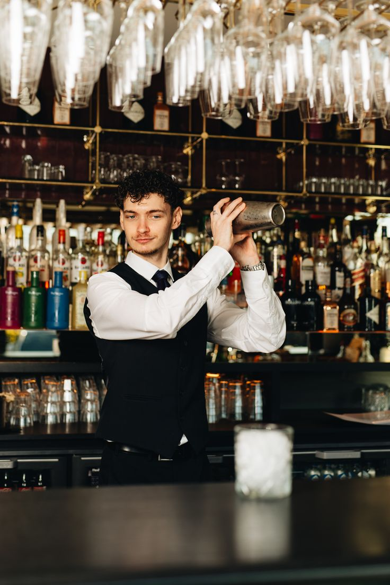
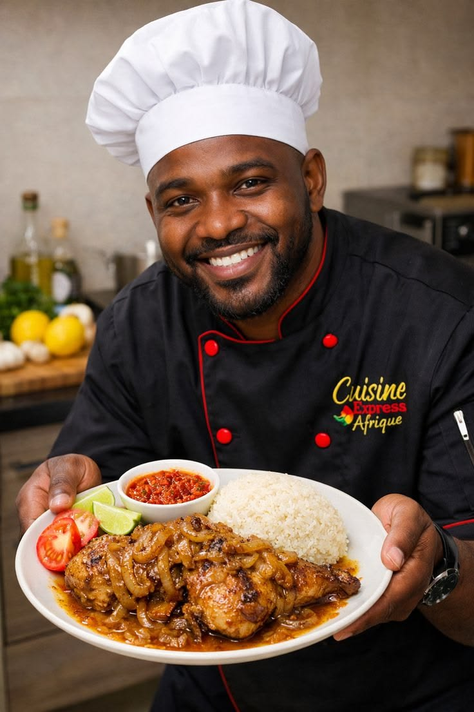
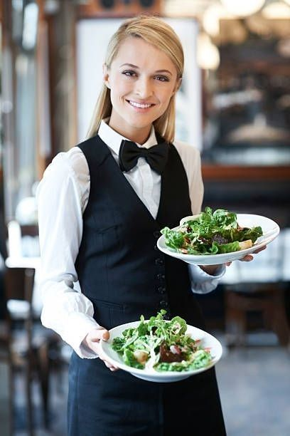

Pousser chez TERANGA FOOD,c'est s'offrir une parenthése enchantée où chaque sourire est une promesse de bienvenue.
Chez TERANGA FOOD; la propreté est le premier ingredient du voyage.
Le restaurant TERANGA FOOD est un sanctuaire du Patrimoine culinaire sénégalais,où les recettes ancestrales sont préservées avec une ferveur sacrée.
Idéal pour les actifs, le service de livraison est réputé pour sa rapidité extrême, permettant de manger sainement même quand on est pressé.

Derriere le comptoire TERANGA FOOD;Youssouf Noba est bien plus qui'un barman:il est le véritable alchimiste de la maison.Avec une précision rare et sens inné de l'accueil,il transforme chaque préparation en un geste de bienvenue.Son talent réside dans cet équilibre parfait entre technicien et chaleur humaine.

Au coeur des cuisines du TERANGA FOOD,Mahib oeuvre avec la passion d'un véritable artisan du gout.Cuisinier au talent généreux,il est le gardien des saveurs qui font la renommée de l'établissement.Chaque plat qui sort de ses fourneaux est une signature:une alliance de rigueur technique et d'amour pour le produit.

Visage rayonnante et voix apaisante, Mariam Ouattara est la premiére ambassadrice du TERANGA FOOD.En tant que receptionniste,elle est le trait d'union entre l'agitation de la ville et la sérénité du restaurant.Avec une élégance naturelle et un professionnalisme sans faille,elle accueille chaque visiteur comme un invité de marque.

Mame Diarra est la touche de lumiére qui circule entre les tables du TERANGA FOOD.En tant que serveuse,elle incarne la fluidité et l'élégance,portant chaque plat avec une délicatesse qui honore le travail de la cuisine.